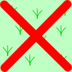
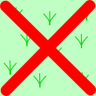
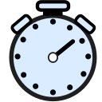

|  | ||||||
| 通常の枡 | 障害物 | 水濠 | プレイヤ初期位置 | 制約違反の枡 | ||
右図に編集中のコースエディタの画面例を示します。
コースは指定した幅と長さの格子状の枡からなります。 幅と長さの最小値は5，最大値は100です。 この例ではコースの幅が16、長さが20です。
コースエディタはコースの大きさと障害物の配置を決めます。 障害物には通常の障害物と水濠障害があります。 障害物の役割についてはルールをご参照ください。
赤と青の三角形が両プレイヤの初期位置を示します。
コース画面の上半分程度が白っぽくなっています。 これは先頭プレイヤがマウスカーソル位置 (この例では青のプレイヤの初期位置) にあるとき、プレイヤの視界 (この例では10枡先まで) の外であることを表しています。 この領域はマウスの動きに従って変化します。
マウスカーソル位置の枡は外枠が赤くなり、 枡の座標 (この例では “(7,0)”) が近くに表示されます。 座標は右手系です。
後戻り必要量の制約に違反する枡 (いずれかのプレイヤの初期位置から到達可能で、 視界の範囲の値以上 y 座標が小さい枡まで戻らないとゴールできない枡) には、 赤い×印が表示されます。
|  | ||||||
| 通常の枡 | 障害物 | 水濠 | プレイヤ初期位置 | 制約違反の枡 | ||
コース内の枡をマウスクリックして、枡の状態を変更できます。 クリックするごとに障害物なし→通常障害→水濠障害→障害物なしと循環します。
枡の中でマウスボタンを押し下げると、その枡の状態が変わりますが、 そのままドラッグするとドラッグ先の枡も同じ状態になります。 マウスボタンを離せば、変更は離したときの枡までになります。
プレイヤの初期位置の枡でマウスボタンを押し下げてドラッグすると、 そのプレイヤの初期位置はドラッグ先になります。 ただし、ドラッグできる先は最も下の行の障害物のない枡に限られます。
ページの一番上に以下のようなボタン類が並んでいます。これらの使い方について説明します。
| ボタン | 機能 |
|---|---|
| コースの幅を1列拡げます。 | |
| コースの幅を1列狭めます。 | |
| コース長を1行長くします。 | |
| コース長を1行縮めます。 |
これらのボタンの間にある “16x20” は、 現在のコースの幅と長さを示しています。 幅も長さも最小と最大の間でしか変えられません。
| ボタン | 機能 |
|---|---|
| コース幅全体が入るようにズームします。 初期状態やウィンドウサイズを変更した場合にはこの状態になります。 | |
| 長さ方向にもコース全体が入るようにズームします。 | |
| 表示を10%拡大します。 | |
| 表示を10%縮小します。 |
コース全体を表示しきれない場合にはスクロールバーが表示されます。
以下の各アイコンの右にある数値領域は、 コースの種々のパラメタを変更するためのものです。
| アイコン | パラメタ |
|---|---|
| 視界の範囲 | |
| 最大ステップ数 | |
|  | 最大合計考慮時間 (秒) |
数値をクリックすればキーボード入力で数値を編集できます。 多くのブラウザではマウスを数値の上に動かすと、 値を上下するスピナーが表示され、 これを使って変更することもできます。
新たなコースの編集を始めます。 新しいコースには障害物がありません。
それまで編集していたコースのデータは失われます。
ファイルに格納してあるコースデータを読み込みます。 クリックするとダイアログが出ますので、読み込むファイルを指定してください。 ファイルを指定すると読み込んだコースデータの編集を始めます。 それまで編集していたコースのデータは失われます。 ダイアログをキャンセルすれば、それまでの編集を継続します。
編集しているコースの情報をファイルに保存します。 ファイル名を指定する入力ボックスが表示されるので、 適宜入力してからSaveをクリックすればコースデータを保存します。 保存先のディレクトリはブラウザのダウンロード先になり、指定することはできません。 指定したファイル名のファイルが既に存在すれば、 ブラウザがファイル名を適宜自動的に変更します。 保存後は編集を継続できます。
Dismissをクリックすれば、保存せずに編集を継続します。
このページを表示します。
下表に示すキー入力は対応するボタンをクリックするのと同じ効果を持ちます。
| キー入力 | 対応するボタン |
|---|---|
| + | 表示拡大 |
| - | 表示縮小 |
| n, N | New |
| l, L | Load |
| s, S | Save |
| h, H | Help |